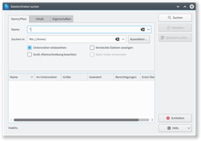

KFind
Dieser Artikel wurde für die folgenden Ubuntu-Versionen getestet:
Ubuntu 16.04 Xenial Xerus
Ubuntu 14.04 Trusty Tahr
Zum Verständnis dieses Artikels sind folgende Seiten hilfreich:
Das Werkzeug "Dateien suchen" ist sehr nützlich, um einzelne Dateien zu suchen, die einem bestimmten Muster entsprechen. Ein Beispiel hierfür könnte die Suche nach Dateien eines bestimmten Typs oder mit bestimmten Buchstaben im Namen sein.
KFind bietet dazu eine traditionelle Suchfunktion der vorhandenen Dateien – ohne permanente Indizierung. Dies unterscheidet KFind von den ebenfalls in KDE enthaltenen Suchfunktion Baloo  (ab Kubuntu 14.04).
(ab Kubuntu 14.04).
Installation¶
KFind ist kein Bestandteil von Kubuntu und muss nachträglich installiert werden [1]:
kfind (universe)
 mit apturl
mit apturl
Paketliste zum Kopieren:
sudo apt-get install kfind
sudo aptitude install kfind
Benutzung¶
|  |
| KFind |
Nach der Installation findet man es im Menü unter „Anwendungen → Dateien/Ordner suchen“ [2]. Nachdem man KFind gestartet hat, kann die Suche auch gleich losgehen, man muss nur im Eingabefeld "Name" ein Attribut (Suchwort) eingeben. Anschließend wählt man den Ordner, in dem gesucht werden soll, indem man den Pfad in "Suchen in:" eingibt oder auf den Knopf "Auswählen..." klickt.
Jetzt kann man die Suche starten, indem man auf "Suchen" klickt oder die Eingabetaste drückt.
Ist das Ankreuzfeld "Unterordnern einbeziehen" ausgewählt, wird ausgehend vom gewählten Ordner rekursiv auch in allen Unterordnern nach der gewünschten Datei gesucht. Die Suchergebnisse erscheinen im Bereich darunter.
Die folgenden Platzhalter sind erlaubt:
Der Stern¶
Der Stern * steht für eine beliebige Anzahl Zeichen (sogar null), das heißt, dass z.B. eine Suche nach "kubu*" die Dateien kubuntu, kubuntu.png und kubuntu_macht_spaß.kwd finden würde. Andererseits würde eine Suche nach "ku*.kwd" auch die Dateien kunterbund.kwd und kubuntu_macht_spaß.kwd finden.
Das Fragezeichen¶
Im Gegensatz zum Stern * steht das Fragezeichen ? für genau einen Buchstaben. "kubunt?" findet also die Datei kubuntu. Dagegen wird "kubuntu?" diese nicht finden. Man kann aber so viele Fragezeichen im Ausdruck verwenden, wie man möchte. Es wird dann genau die Anzahl an Zeichen gefunden, die man durch ein Fragezeichen (plus das Attribut) eingegeben hat.
Einstellungen¶
KFind versteckt viele gute Suchmöglichkeiten. Die Datei-Karte "Inhalt" bietet zum Beispiel weitergehende Funktionen. Sogar das Suchen von in einer Datei enthaltenem Text ist möglich. Momentan werden folgende Textdateien unterstützt:
Einfache Textdateien
Calligra Words (ab Version 1.2)
Calligra Stage (ab Version 1.2)
Calligra Sheets (ab Version 1.2)
LibreOffice Writer (ODT)
LibreOffice Impress (ODP)
LibreOffice Calc (ODS)
Groß-/Kleinschreibung beachten¶
Ist diese Option eingeschaltet, findet KFind nur Dateien mit exakter Schreibweise ("SensitiveCase"). Wenn nach "kubuntu" gesucht wird, wird die Datei Kubuntu also nicht gefunden.
 Übersichtsartikel
Übersichtsartikel- Erstellt mit Inyoka
-
 2004 – 2017 ubuntuusers.de • Einige Rechte vorbehalten
2004 – 2017 ubuntuusers.de • Einige Rechte vorbehalten
Lizenz • Kontakt • Datenschutz • Impressum • Serverstatus -
Serverhousing gespendet von